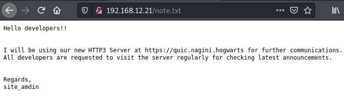

3.1 Files and directories
If you visit the 192.168.12.21 URL you got nothing interesting.
1. Enumerate information about the directories.
$gobuster dir -u http://192.168.12.21 -x html,txt,php,bak --wordlist=/usr/share/wordlists/dirb/common.txt
Output:
We got a directory “/joomla” and a “note.txt” file.
3. Open in your browser the “note.txt” file.

It looks as if the server is using “http3 protocol” which isn’t currently supported by the browser. Doing some research, I found out that we could build “cloudflare’s” quiche repo for the purpose.